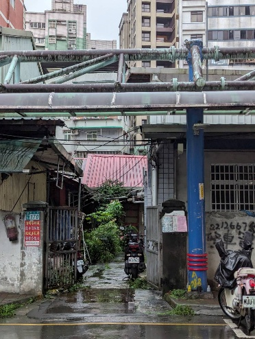

田野紀錄
把耳朵貼近地方
這一頁讀的是門牆後的時代風聲。國校路曾有官邸、眷村與政軍人物的身影；當繁華與權力退遠，留下來的，是巷弄裡仍可辨認的居住痕跡。
國校路的名門官邸與風雲往事

國校路的名門官邸與風雲往事
NotebookLM整理
在兩段錄音訪談中，郭儒鈞里長提到早期國校路一帶地勢平坦、風水極佳，因此吸引了許多將軍、國大代表、大使及高級官員在此居住：
1. 高級官員與部長
高魁元：前國防部長，曾居住在現今劉家公山附近，當時國防部為其安排於此居住。
李士珍：曾任警察大學相關要職（錄音中提到警察大學李士珍），他的夫人被里長形容有高度潔癖，每天早上都會衝水清洗大門消毒。
朱雲鵬財經專家：里長提到在如意大廈（國校路50號–里長辦公室附近）隔壁住過一位非常有名的政府財經官員。
2. 大使
邵玉麟：曾任駐外大使。里長提到他居住在國校路中段，該處現已改建為大樓（山水大地大樓）。
3. 將軍
鄭將軍（鄭幹棻）：里長曾與他的女兒交流過，得知鄭將軍當初選址於此是因為此地風水好、避難容易且有水利之便。
方將軍（方先覺）：同時具備國大代表身份。後來因為政府在內湖（大湖山莊）配發房子而搬離。
熊彬市長：居住在國校路61 巷？ 1 號，位置在安華二村（現停車場）後方。
4. 國大代表與立法委員
李方禮：曾居住在現今如意大廈的位置，他去世後家屬才將房產賣出。
郭儒鈞（里長本人）：郭里長在訪談中提到自己曾擔任過國大代表與議員，並分享過在國大開會期間的往事。
國校路早期住過多位國大代表與立法委員，由於住戶身份顯赫，該區早期甚至有專屬電線通往官邸以確保供電穩定。
此外，該區域曾有國安局（前身相關單位）借用的場地與宿舍（如安華二村），安置了約 12戶國安局的人員（軍事與安全：早期國校路有專屬電線通往重要官邸，且曾有部隊（國安局前身相關單位）借用學校場地或蓋宿舍（如安華二村）
國校路附近職眷分布與名流官邸除了國安局（安華二村）之外，根據錄音訪談內容，國校路附近確實還有其他公家單位曾借地安置人員或設立辦公空間：
軍方（部隊）：早期軍方曾在新店國小旁的「小操場」借地。當時部隊因為沒有地方居住和辦公，便借用該處，後來該地曾發生火災燒毀。
警務處：在現今北宜路進來？、蓋成 12 層樓建築的位置，早期是警務處的外圍辦公室。國校路整排最早也是屬於警務處的範圍。
國防部： 國防部曾安排高級將領居住於此。例如前國防部長高魁元就曾住在現今劉家公山附近，那是國防部為其安排的住所。
學校宿舍（教育單位）：雖然性質略有不同，但國校路 65 巷及周邊也有大量的老師宿舍，包含校長、教務主任及多位老師的居所，這些宿舍多為日式建築，有些後來由文化局整修保存。
同行光影
光影也替地方作證
這一頁的影像仍在路上，待它歸位時，地方的輪廓會再多一層光。